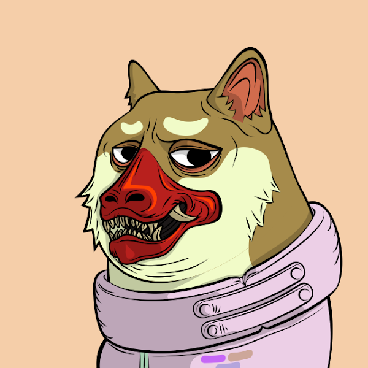
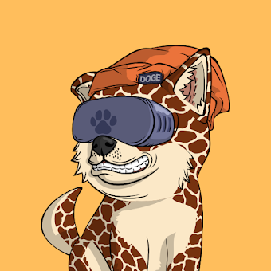
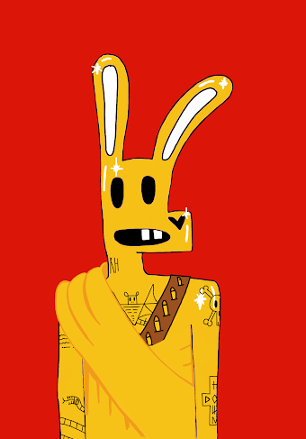
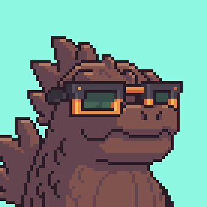

The Doge Pound®
The Doge Pound was the first NFT collection I bought into. I had originally bought three of them, but decreased my ownership to one. I currently own one with the demon mask trait. I plan on holding this collection for a long time. This collection has a lot of utility including Call of Duty Tournaments and a luanchpad that allows me to enter new projects. I have met a lot of new friends through The Doge Pound.
Puppy Pound®
The Doge Pound Puppies!Doge Pound Puppies is a collection of puppies that were given to all Doge Pound holders for free. I enjoy the artwork of the puppies much more. I even received a tshirt with a picture of puppy #231 on it. 
Who is Samot®
Who is Samot??Samot Club is a collection of 8888 NFTs. One of my friends I made from the Doge Pound started this project and asked me if I would like to help with it. I got to meet a lot of cool people through this project, even some coders.
Kaiju Kingz®
KaijuKingzKaiju Kingz was a compulsive purchase. My twelve year old brother, Matthew thought it was cool. I also enjoyed the artwork. I mean who doesn't like mini godzillas.
